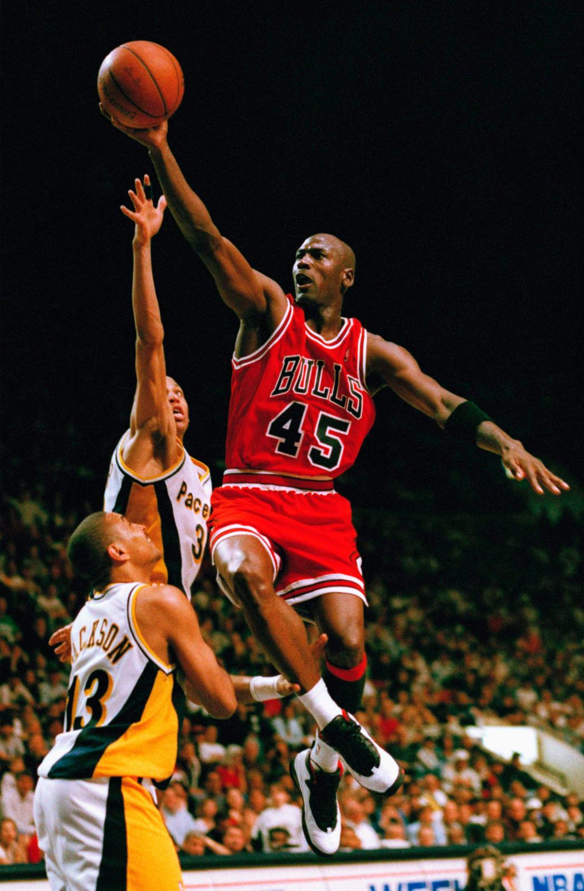
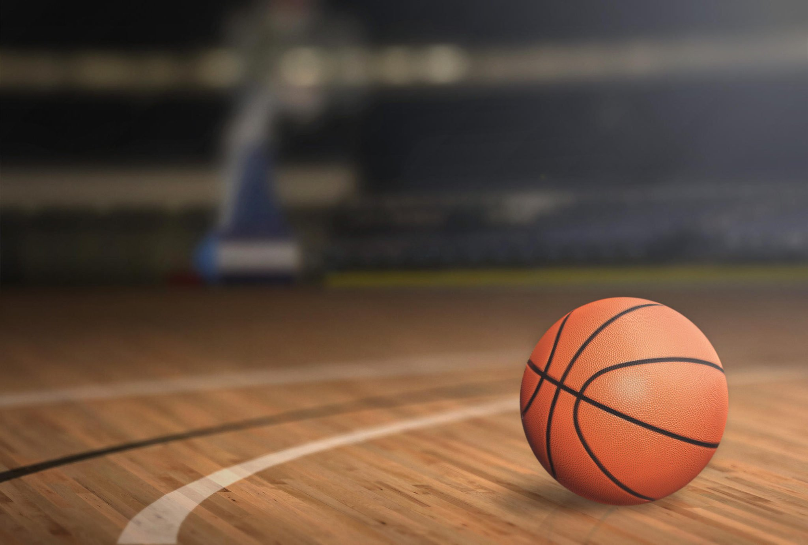

 Баскетбо́л (англ. basket «корзина» + ball «мяч») — спортивная командная игра с мячом, в которой мяч забрасывают руками в кольцо соперника. В баскетбол играют две команды, каждая из которых состоит из пяти полевых игроков (замены не ограничены). Цель каждой команды — забросить мяч в кольцо с сеткой (корзину) соперника и помешать другой команде завладеть мячом и забросить его в свою корзину. Корзина находится на высоте 3,05 м от паркета (10 футов). За мяч, заброшенный с ближней и средней дистанций, засчитывается два очка, с дальней (из-за трёхочковой линии) — три очка; штрафной бросок оценивается в одно очко. Стандартный размер баскетбольной площадки — 28 м в длину и 15 м — в ширину. Баскетбол — один из самых популярных видов спорта в мире.Баскетбол входит в программу Олимпийских игр с 1936 года (изобретатель игры Джеймс Нейсмит был там в качестве гостя). Регулярные чемпионаты мира по баскетболу среди мужчин проводятся с 1950 года, среди женщин — с 1953 года, а чемпионаты Европы — с 1935 года.В Европе проводятся международные клубные соревнования по баскетболу: Евролига, Еврокубок, Кубок вызова ФИБА.Наибольшего развития эта игра достигла в США: чемпионат Национальной баскетбольной ассоциации (НБА) более 50 лет является сильнейшим национальным клубным турниром в мире. Баскетбол считается национальным видом спорта в Литве.
 Зимой 1891 года студентам колледжа Молодёжной христианской ассоциации из Спрингфилда, штат Массачусетс, вынужденным выполнять гимнастические упражнения, считавшиеся в то время единственным средством приобщения молодёжи к спорту, было очень скучно на занятиях физического воспитания. Однообразию таких занятий необходимо было положить конец. Один из первых баскетбольных мячей Выход из этого положения нашёл преподаватель колледжа Джеймс Нейсмит. 21 декабря 1891 года он привязал две корзины из-под персиков к перилам балкона спортивного зала и, разделив восемнадцать студентов на две команды, предложил им игру, смысл которой сводился к тому, чтобы забросить большее количество мячей в корзину соперников. Идея этой игры у него зародилась ещё в школьные годы, когда дети играли в старинную игру «duck-on-a-rock» («Утка на скале»). Смысл этой популярной в то время игры заключался в следующем: подбрасывая небольшой камень, необходимо было поразить им вершину другого камня, большего по размеру. Игра, получившая название «баскетбол», лишь отдалённо напоминала современный вид спорта. Ведения мяча не существовало, игроки только перебрасывали его друг другу, стоя на месте, и стремились затем закинуть в корзину, причём исключительно обеими руками снизу или от груди, а после удачного броска один из игроков забирался на приставленную к стене лестницу и извлекал мяч из корзины. Целью доктора Нейсмита было создать игру именно коллективную, в которую можно было бы вовлечь одновременно большое количество участвующих, и этой задаче его изобретение отвечало в полной мере. В 1892 году преподавателем физкультуры Смит-колледжа в Нортгемптоне (Массачусетс) Сендой Беренсон были разработаны первые правила женского баскетбола.
Главная страница
Армреслинг
Воркаут
Баскетбол